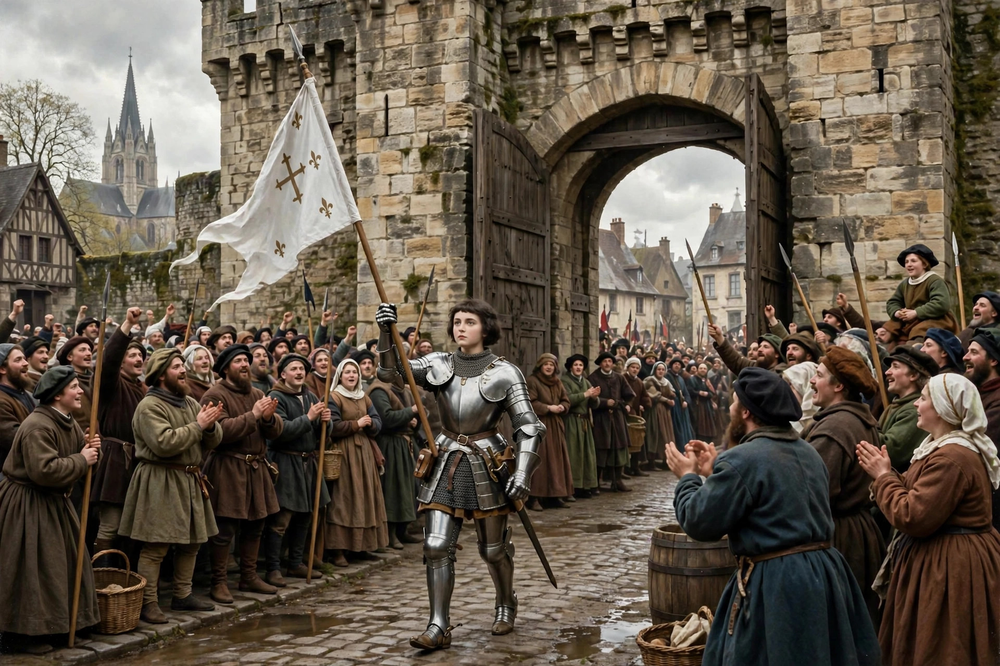

| Siege of Orléans | |
|---|---|
 | |
| Date | 12 October 1428 – 8 May 1429 |
| Location | Orléans, France |
| Result | French victory; siege lifted |
| Belligerents | Kingdom of France · Kingdom of England & Burgundian allies |
| Commanders | Jean de Dunois; Joan of Arc · Earl of Salisbury †; Earl of Suffolk; John Talbot |
| Part of | Hundred Years' War (Loire campaign) |
The Siege of Orléans (12 October 1428 – 8 May 1429) was a decisive engagement of the Hundred Years' War, in which French forces relieved the city of Orléans from an English siege. The arrival of Joan of Arc with a relief army in April 1429 transformed French morale, and the siege was lifted within days. The victory marked the turning point of the war in France's favour.
By 1428 the English and their Burgundian allies controlled northern France, and Orléans — the principal city on the Loire and gateway to the remaining territory of the Dauphin Charles — was the key to further advance south. An English army under Thomas Montagu, 4th Earl of Salisbury, invested the city in October 1428, building a ring of fortified bastilles and seizing the Tourelles, the fort guarding the bridge from the south bank. Salisbury was mortally wounded by cannon fire early in the siege, and command passed to the Earl of Suffolk, with John Talbot and Lord Scales leading operations. Inside the city, the garrison under Jean de Dunois (the Bastard of Orléans) held out through the winter as supplies dwindled.
On 29 April 1429 Joan of Arc, a teenage visionary who had persuaded the Dauphin of her divine mission at Chinon, entered Orléans with a supply convoy, dramatically raising the defenders' morale. Over the following days the French, spurred by Joan's insistence on aggressive action, captured the outlying English bastilles one by one. On 7 May the French stormed the Tourelles; Joan was wounded by an arrow but returned to the assault. On 8 May the English drew up in battle order, then abandoned the siege and withdrew north.
The relief of Orléans was the first major French victory after a generation of defeats. It opened the Loire campaign: French victories at Jargeau, Meung-sur-Loire, Beaugency, and Patay (where Talbot was captured) cleared the valley, and in July 1429 Charles was crowned Charles VII at Reims, with Joan standing by the altar. Orléans still celebrates the anniversary of its deliverance each May in the Fêtes johanniques, and Joan's role in the siege made her one of the most enduring figures in French history.
See also: Joan of Arc · Charles VII of France · Battle of Patay · Hundred Years' War